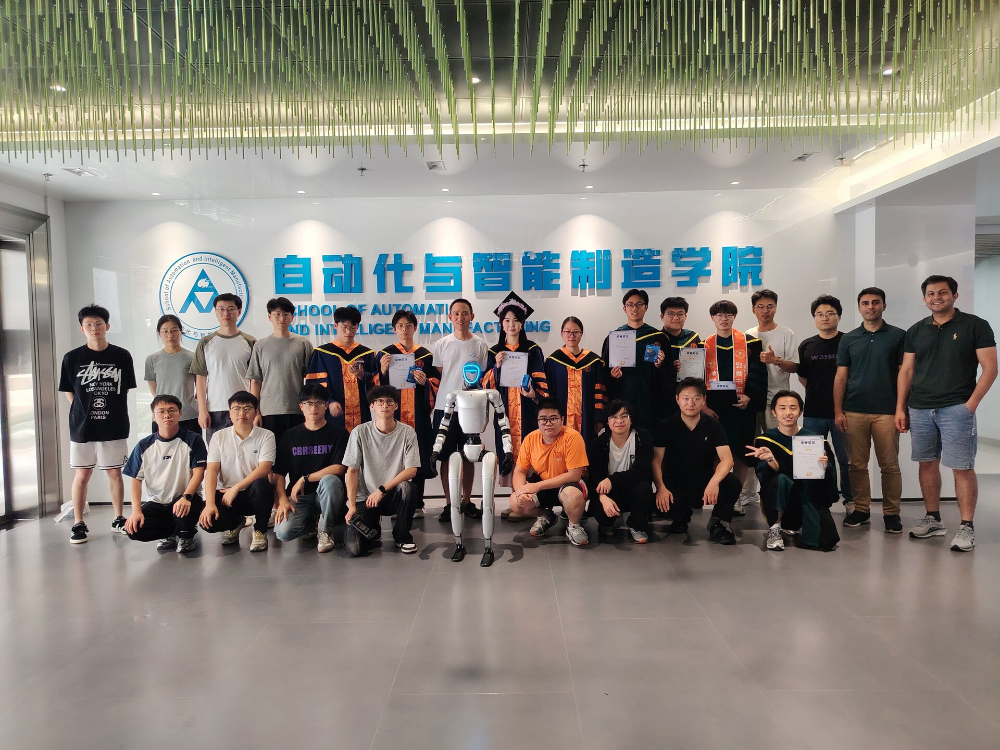
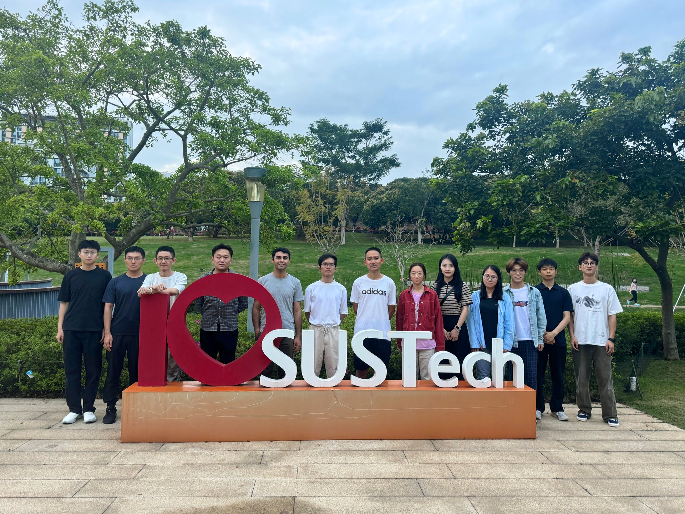
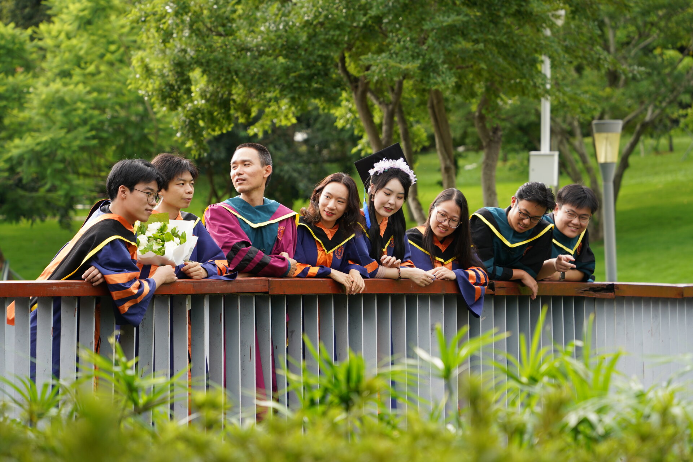
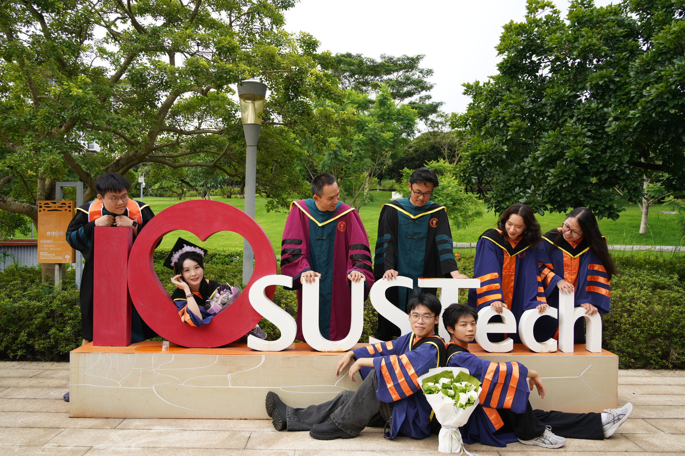
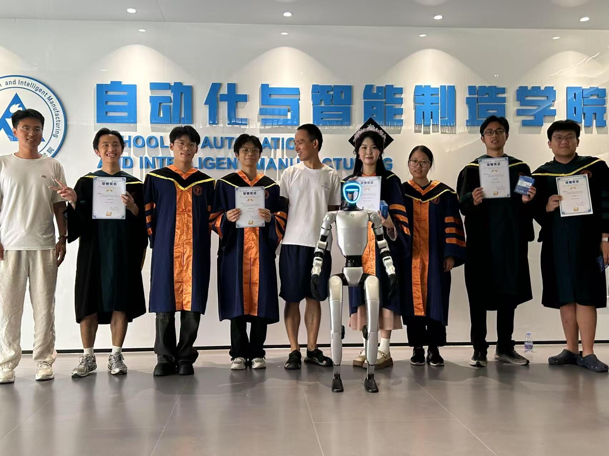
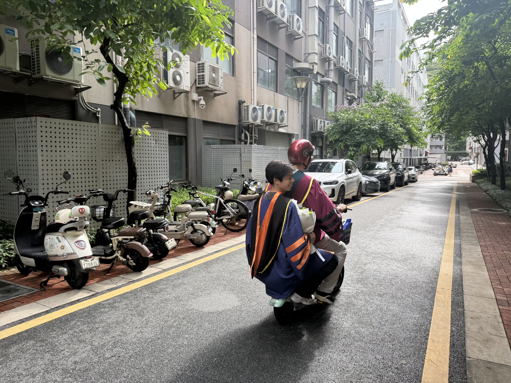
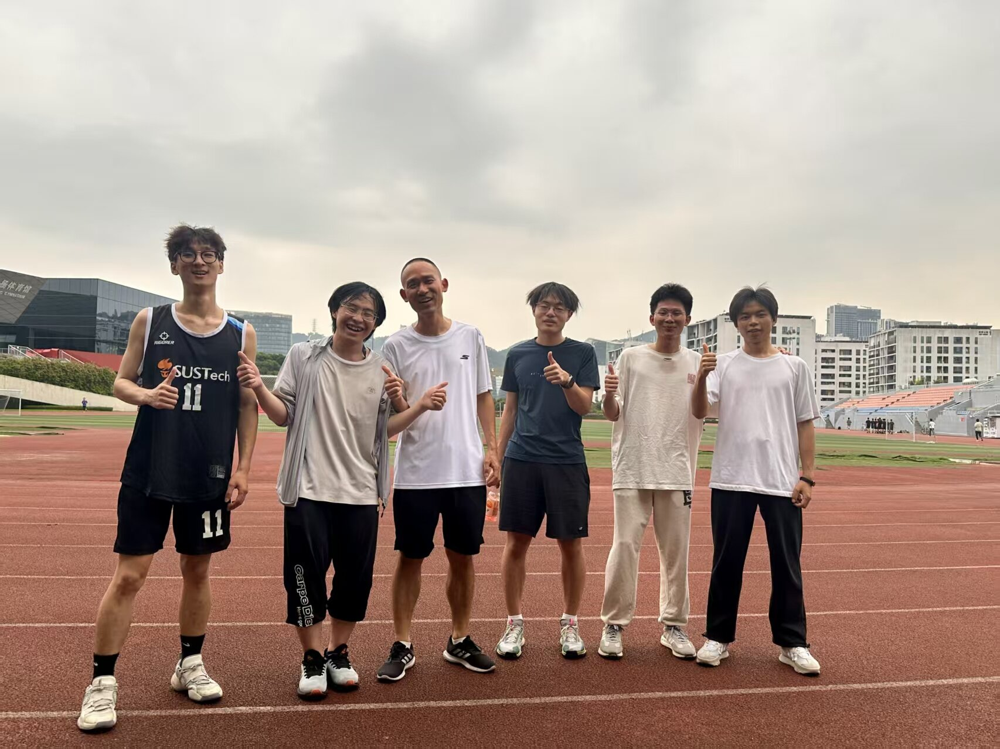

Join Us!We are constantly looking for dedicated and talented people to join our lab at the levels of undergraduate interns/visitors, Master students, PhD students, postdoctoral researchers, and research-track professors. For postdoctoral or higher level positions: the candidate should have obtained or is expecting to obtain a PhD degree in control, robotics, mechatronics, machine learning, and other related fields. The candidate should have published 1-2 papers in top journals or conferences. For Master/PhD student positions: the candidate is expected to have very strong skills in at least one of the following areas: programming (Python, PyTorch, C, etc); embedded systems development; ROS; Mechatronics & hardware design. Experience in major competitions such as RoboMaster will be a plus. For undergraduate interns/visitors: the candidate needs to have or is in the process of acquiring programming skills (Python, C). Undergraduate students from SUSTech or based in Shenzhen/the Greater Bay area are specially welcomed. Note to SUSTech undergraduate students: What we offer includes, but not limited to the following:
南科大在校本科生，在联系之前，请认真阅读。我们可以提供:
Should you have further questions, feel free to contact us.







|